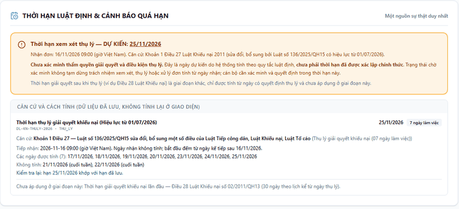
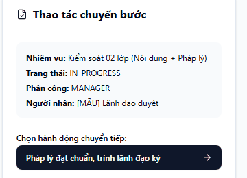
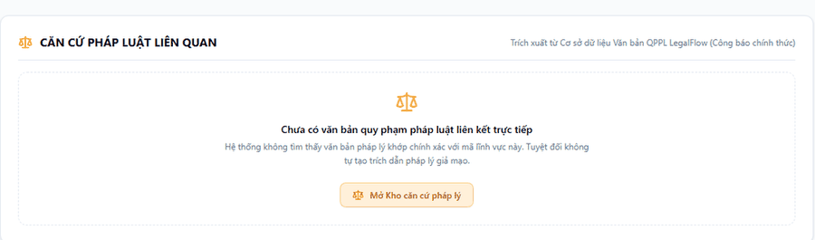
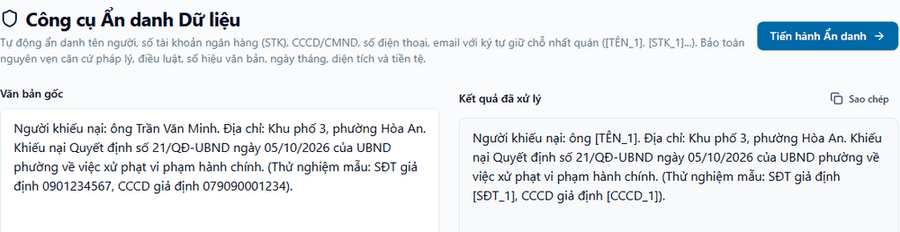
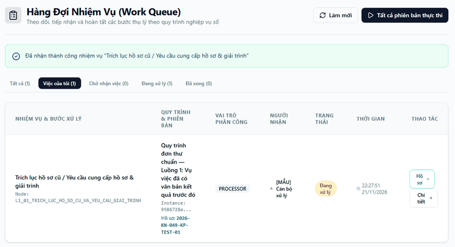
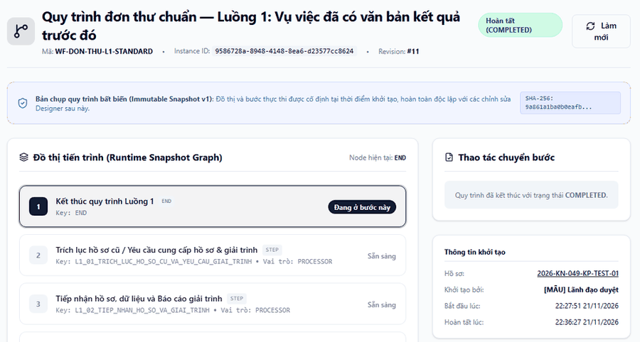

Chưa có: việc mới
Trong phần mềm gọi là Luồng 2.
Ví dụ: phản ánh, kiến nghị về việc dân sinh mới phát sinh.
- Phòng chuyên môn chủ trì về chuyên môn.
- Văn phòng tiếp nhận, phân loại và theo dõi tiến độ.
Đúng luồng - Vững luật - Thấu tình
Pháp Dẫn (LegalFlow) là phần mềm được thiết kế để giúp cán bộ xã, phường giữ ba thứ cho mỗi lá đơn: hạn xử lý, người đang giữ hồ sơ, và căn cứ pháp lý. Người có thẩm quyền vẫn là người quyết định.
Dành cho cán bộ xử lý đơn khiếu nại, tố cáo, kiến nghị, phản ánh. Đây không phải nơi người dân nộp đơn. Phần mềm đang ở giai đoạn thử nghiệm với hồ sơ mẫu, chưa dùng cho hồ sơ thật.
Ông Minh không đồng ý với một quyết định của phường và gửi đơn khiếu nại. Chị Lan là cán bộ văn phòng. Cả hai là nhân vật minh họa, hồ sơ là hồ sơ mẫu.
Chị Lan nhập đơn, phần mềm cấp mã hồ sơ. Chị đọc đơn, đọc hồ sơ lưu, rồi chọn quy trình theo quy chế của đơn vị. Phần mềm không chọn thay.
Ô thời hạn đếm 07 ngày làm việc, ghi rõ ngày nào được tính, ngày nào không và vì sao. Mỗi nhiệm vụ có người phụ trách và hiện trong hàng đợi việc của người đó.
Lưu ý Bộ đếm trong phần mềm chưa nạp ngày nghỉ 24/11/2026 và lịch nghỉ lễ năm 2027, nên hạn đi qua những ngày này đang lệch. Ô đếm thử ở mục dưới đã nạp đủ.
Cán bộ kiểm tra căn cứ có thể đưa từng trích dẫn vào Khóa trích dẫn để đối chiếu với kho văn bản. Dự thảo đi qua kiểm soát, rồi người có thẩm quyền ký.
Lưu ý Khóa trích dẫn hiện là công cụ dùng riêng, chưa gắn vào bước thẩm tra, nên phần mềm chưa bắt buộc kiểm mọi trích dẫn trước khi ký.

Một số nơi chia đơn thành hai quy trình ngay khi nhận. Cách chia nằm trong quy chế của từng địa phương, không phải quy định chung của luật.
Trong phần mềm gọi là Luồng 2.
Ví dụ: phản ánh, kiến nghị về việc dân sinh mới phát sinh.
Trong phần mềm gọi là Luồng 1.
Ví dụ: người dân không đồng ý với văn bản đã ban hành, đề nghị xem xét lại hoặc hủy bỏ.
Mô tả theo quy chế của một phường. Theo quy chế ấy, chỉ tính văn bản do chính cơ quan đó ban hành về cùng việc, ví dụ quyết định, thông báo kết quả, thông báo đang giải quyết hoặc không giải quyết; phiếu chuyển, biên bản hay văn bản của cơ quan khác thì không tính. Cán bộ tiếp nhận quyết định theo quy chế của đơn vị. Pháp Dẫn hiển thị hai quy trình để cán bộ chọn; phần mềm không tự xác định quy trình.
Theo quy chế của đơn vị: ba vai riêng, kiểm lần một, kiểm lần hai, ký
Phần mềm hiện chưa làm được như vậy. Trên bản thử nghiệm chỉ có một bước duyệt, một nút bấm, mang tên "Kiểm soát 02 lớp", và cùng một tài khoản bấm được cả nút duyệt lẫn nút ban hành. Việc tách thành hai bước và chặn một người đảm nhận cả ba vai đang được làm.

Chọn một ngày nhận đơn. Trang này sẽ đếm 07 ngày làm việc và chỉ ra ngày cuối của thời hạn thụ lý, bỏ qua thứ bảy, chủ nhật và ngày nghỉ lễ.
Ngày nhận là ngày ghi trên phiếu tiếp nhận của cơ quan, không phải ngày bạn gửi. Ô này minh họa cách đếm; hạn thật của một đơn do cơ quan thụ lý xác định.
Chọn một ngày làm việc trong khoảng 01/11/2026 đến 04/3/2027, là khoảng đã đối chiếu lịch nghỉ lễ. Ngoài khoảng này hoặc chọn ngày nghỉ, trang sẽ báo và không tính. Đơn gửi vào ngày nghỉ được cơ quan ghi nhận theo quy định tiếp nhận của cơ quan; hỏi bộ phận tiếp công dân để biết ngày ghi trên phiếu tiếp nhận.
Ngày nhận, không tính Ngày làm việc được tính Thứ bảy, chủ nhật Nghỉ lễ Ngày cuối của thời hạn
Căn cứ: khoản 1 Điều 27 Luật Khiếu nại số 02/2011/QH13, được sửa đổi, bổ sung bởi Luật số 136/2025/QH15 có hiệu lực từ 01/7/2026. Ngày nghỉ: Điều 112 Bộ luật Lao động số 45/2019/QH14; khoản 1 Điều 2 Nghị quyết số 28/2026/QH16 (Ngày Văn hóa Việt Nam 24/11, năm 2026 nghỉ đúng thứ ba 24/11, không hoán đổi); Thông báo số 11483/TB-BNV ngày 09/10/2026 của Bộ Nội vụ (Tết 2027). Đã đối chiếu ngày 22/11/2026.
Minh họa trên trang web Ô đếm này chạy ngay trong máy của bạn, không gửi dữ liệu đi đâu.
Trong phần mềm: đang hoàn thiện Phần mềm đã đếm 07 ngày làm việc và nêu lý do từng ngày, nhưng chưa nạp ngày nghỉ 24/11/2026 và lịch nghỉ lễ năm 2027; hai lịch này hiện chỉ có trong ô đếm trên trang.
AI có thể viết ra một điều luật nghe rất đúng nhưng không hề có thật. Khóa trích dẫn đối chiếu từng trích dẫn với kho văn bản đã nạp. Điều nào chưa có trong kho thì không được xác nhận, kể cả khi điều đó có thật ngoài đời.

Thử đoán trước khi xem kết quả
Đã khóa căn cứ (trên kho dữ liệu thử)
Điều này có thật và có trong kho dữ liệu thử, nên phần mềm xác nhận. Điều 24 Luật Tố cáo số 25/2018/QH14 còn cho phép kéo dài nhưng không quá 10 ngày làm việc khi phải xác minh ở nhiều nơi.
Ngoài kho căn cứ, không xác nhận
Điều này có thật ngoài đời. Nhưng Bộ luật Dân sự không thuộc kho văn bản đang dùng cho việc này, nên phần mềm không đối chiếu được và không xác nhận. Không xác nhận không có nghĩa là điều luật không tồn tại.
Không tìm thấy điều khoản, không xác nhận
Luật Đất đai số 31/2024/QH15 chỉ có 260 điều, nên không có Điều 300. Văn bản thì có trong kho, còn điều luật thì không. Đây là kiểu sai mà AI hay mắc: ghép một tên luật có thật với một số điều không có.
Nội dung thuộc phiên bản cũ
Điều 27 có thật, nhưng con số 10 ngày (ngày lịch) là của bản trước. Từ 01/7/2026, Luật số 136/2025/QH15 sửa thành 07 ngày làm việc. Một trích dẫn đúng tên điều vẫn có thể sai nội dung nếu lấy theo bản cũ.
Bốn ca trên lấy từ bộ kiểm thử đã duyệt, chạy trên kho dữ liệu thử. Kho văn bản chính thức đang được nạp và xác minh, nên hiện phần mềm chưa xác nhận Điều 24 Luật Tố cáo và Điều 27 Luật Khiếu nại trên kho chính thức.
So với một chatbot AI hỏi đáp chung, không gắn với kho văn bản và quy trình của cơ quan. Ba điều dưới đây chụp trên bản thử nghiệm, chạy trên kho dữ liệu thử; kho văn bản chính thức đang được nạp.
AI vẫn có thể nghĩ ra một điều luật không tồn tại. Chỗ khác là ở đây: khi cán bộ đưa một căn cứ vào Khóa trích dẫn, căn cứ không có trong kho bị ghi "chưa xác nhận" thay vì được coi là đúng. Khi hồ sơ chưa có văn bản khớp, khối căn cứ để trống thay vì tự điền. Công cụ chưa gắn vào bước thẩm tra, nên chưa tự chặn một dự thảo có căn cứ chưa xác nhận.

Mỗi lần đổi trạng thái hồ sơ đều ghi người đổi, giờ đổi và căn cứ. Mỗi lần kiểm một trích dẫn đều ghi rõ có trong kho hay ngoài kho. Ngoài ra, bảng truy xuất nguồn gốc xếp bốn hạng mục của hồ sơ (thông tin tiếp nhận và thụ lý, tài liệu và hồ sơ đính kèm, đề xuất hành động nghiệp vụ tiếp theo, cơ sở pháp lý liên quan), mỗi hạng mục ghi nguồn, người ghi, thời điểm và tính chất pháp lý.

Phần mềm gợi ý việc tiếp theo và nói rõ gợi ý ấy dựa vào căn cứ nào, nhưng ghi thẳng là "hệ thống không tự ý chuyển trạng thái hoặc đưa ra kết luận pháp lý tự động". Trợ lý AI chỉ hỗ trợ tóm tắt và gợi ý phân loại, không có giá trị pháp lý tự động; cán bộ thụ lý chịu trách nhiệm về kết quả.

Việc đặt con người ở vị trí quyết định cũng là yêu cầu của Điều 4 Luật Trí tuệ nhân tạo số 134/2025/QH15, có hiệu lực từ 01/3/2026.
Danh sách dưới đây dựa trên một lần chạy thử trọn vẹn một hồ sơ mẫu trên bản thử nghiệm ngày 21/11/2026. Việc gì chưa có thì ghi là chưa có.
Đếm 07 ngày làm việc, liệt kê ngày được tính và ngày không tính kèm lý do, và tự kiểm lại kết quả. Chưa nạp ngày nghỉ 24/11/2026 và lịch nghỉ lễ năm 2027, nên hạn đi qua những ngày này đang lệch.
Hồ sơ mẫu đã đi trọn quy trình cho việc đã có văn bản trước đó (phần mềm gọi là Luồng 1), từ trích lục hồ sơ cũ đến đóng hồ sơ. Mỗi bước có vai trò phụ trách riêng.
Mỗi người thấy việc đang thuộc về mình, kèm bước, vai trò và trạng thái. Hàng đợi chưa hiển thị hạn phải xong.
Chạy đúng cả ba kiểu kết quả trên kho dữ liệu thử. Kho văn bản chính thức đang được nạp. Công cụ hiện đứng riêng, chưa gắn vào bước thẩm tra của hồ sơ.
Che được họ tên, số điện thoại, số căn cước, email và số tài khoản. Chưa che địa chỉ.
Mỗi lần đổi trạng thái hồ sơ đều ghi người thực hiện, thời điểm và căn cứ. Nhật ký các bước quy trình hiện nằm ở màn hình riêng, chưa gộp chung vào lịch sử của hồ sơ, nên người xem lịch sử chưa thấy hết các bước đã làm. Vì vậy dòng này ghi "Đang hoàn thiện".
Màn hình thông báo đã có chỗ, nhưng phần mềm chưa tự sinh lời nhắc.
Có ba mẫu: phiếu xử lý đơn, thông báo thụ lý, báo cáo xác minh; xuất được ra PDF hoặc Word. Chưa có mẫu quyết định giải quyết khiếu nại và phiếu đóng hồ sơ, là hai mẫu khác với ba mẫu trên.




Bốn ảnh chụp bản thử nghiệm ngày 21/11/2026, dữ liệu giả định, đã che tên tài khoản.
Từ 06/4/2026, một phường chia đơn thành hai quy trình như trên, khi chưa dùng phần mềm. Phường ghi nhận hai con số dưới đây; đây không phải phép đo hiệu quả của Pháp Dẫn.
Đây là tỉ lệ đơn trễ hạn hoặc còn tồn đọng, kể cả đơn đã giải quyết nhưng trễ hạn trong kỳ.
Kết quả này đạt được nhờ cách tổ chức công việc của phường, khi chưa có phần mềm hỗ trợ. Pháp Dẫn được thiết kế để làm cách tổ chức ấy dễ thực hiện hơn. Hiệu quả của phần mềm sẽ được đo khi thí điểm.
Số liệu theo dõi đơn của chính phường, chưa có đánh giá độc lập. Hai kỳ dài ngắn khác nhau nên không so sánh trực tiếp được; kỳ sau không tính đơn liên quan dự án được xử lý bằng phiếu chuyển.
Phần lớn cảnh trong video là mô phỏng thiết kế, chưa có trong phần mềm; chỉ đoạn khóa trích dẫn Điều 328 Bộ luật Dân sự 2015 là ảnh giao diện thật trên bản thử nghiệm.
Nút trên là một liên kết thường. Trang này không nhúng trình phát, không tải ảnh đại diện của YouTube và không gọi YouTube cho tới khi bạn bấm.
Trang này không nhận đơn và không tra cứu được hồ sơ của bạn. Pháp Dẫn là phần mềm dành cho cán bộ, đang thử nghiệm với hồ sơ mẫu.
Để hỏi về một lá đơn đã gửi, xin liên hệ bộ phận tiếp công dân của cơ quan đang giải quyết đơn, hoặc nơi đã cấp phiếu tiếp nhận cho bạn.
Không. Phần mềm theo dõi hạn, hiển thị việc của từng người và đối chiếu căn cứ. Việc phân loại đơn, chọn quy trình, duyệt và ký đều do người có thẩm quyền làm.
Chưa. Đang chạy thử với hồ sơ mẫu và dữ liệu giả định.
Công cụ tìm kiếm trả về thứ gần giống. Khóa trích dẫn chỉ xác nhận khi khớp đúng văn bản và đúng số điều, khoản trong kho; không khớp thì báo không xác nhận chứ không đưa ra phương án gần đúng.
Vì văn bản đó chưa nằm trong kho đang dùng. Phần mềm chọn cách thà không xác nhận còn hơn xác nhận nhầm. "Không xác nhận" không có nghĩa là điều luật không tồn tại.
Theo thiết kế, dữ liệu tách theo đơn vị, quyền xem và sửa theo vai trò. Bộ che thông tin che được tên, số điện thoại, số căn cước, email và số tài khoản trước khi đưa cho AI đọc; chưa che địa chỉ. Hiện một tài khoản vẫn bấm được cả bước duyệt lẫn bước ban hành; việc chặn này đang được làm.
Gửi thư qua trang Liên hệ, nêu hai hoặc ba khung giờ thuận tiện. Buổi xem thử khoảng 20 phút, chạy trên hồ sơ mẫu.
Hai mươi phút, chạy trên hồ sơ mẫu, có thể xem trên máy tính hoặc điện thoại. Buổi xem thử dành cho cán bộ xã, phường; không phải nơi nộp hay hỏi về đơn.
Xin biết trước